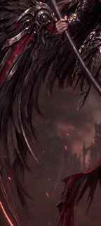
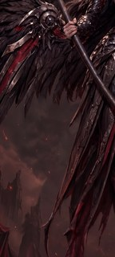
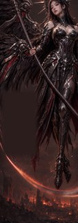
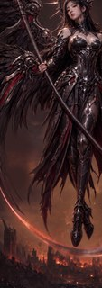
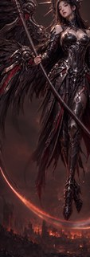

Round 4 compares three complete lower-wing-removal mechanisms on the same W1 base, separately tests whether a partial pre-painted gap can be restored cleanly, and asks whether either fresh-from-spec wallpaper is strong enough to leave the W1 lineage behind.
COMPLETE machine evidence — human verdict needed. All ten paid images are on Drive. FAST evidence includes exact canvas/aspect checks, eight W1 difference reports, four composite-locality reports, and a fresh-context crop audit for every candidate. The shared two-wave blind detector completed all ten records and every disagreement was reconciled. Crop-local paste-back is the strongest machine-supported removal route; the blank-restore rolls failed; the GPT fresh image is promising but not a keeper; Riverflow failed. No mechanism, keeper, or next round is selected until Dimitri and Jake make the three eye-calls below.
Decisions needed
The machine lanes are complete and reconciled. The three human questions remain deliberately separate; answering them closes the round and determines the one coherent next plan.
Which complete W1 removal mechanism looks safest: whole-picture, steered regeneration, crop-local paste-back, a tie, or reject all?Dimitri + Jake
Compare A, B and C against the untouched control. The target is complete removal of the third lower-left wing while keeping the two upper wings, face, crown, hands, scythe, body, background and overall art.
Did either partial blank-then-restore roll fill its painted gap convincingly?Dimitri + Jake
Judge only the actual partial blank. Existing wing remnants outside it are expected; invented content or damage to protected context is a failure.
Is either fresh-from-spec image promising enough to refine instead of repairing W1?Dimitri + Jake
GPT Image 2 is exact 9:20. Riverflow is a 9:16 composition probe whose essential content must fit the centered 9:20-safe band; either route would still need a later approved refinement round.
Core inputs — the base image(s) these candidates were built from
Untouched W1 control — round 3 selected base
Control and complete W1 removal — A: whole-picture edit
The standard Flash edit asks for one complete removal on the full wallpaper. Difference reports show substantial global redraw, so compare protected identity and scene detail carefully.
Recommendation: BASE INPUT — exact round 3 selection
third wingbladeblind cross-checkhaft
1 more detectors (5 total)
wing joints
The unedited 1376×3058 source used by every W1-derived candidate.
full note
Selected as the r4 W1 base. The r3 crop audit scored this artifact REJECT against the frozen surgical contract, where all three asked removals failed; that artifact-level call is not disputed. Dimitri selects it for an unasked-for change the fidelity-framed contract could only penalise: the regenerated upper-left wing shows the clear mechanical joint construction with feathers hanging below it. The audit was accurate that the wing was an unrequested divergence; this is a separate aesthetic judgement that the divergence is an improvement. Jake's own W1 recipe had proposed r3-w1-all-1 as the base with the third wing removed as seen in r3-w1-critex-1; Dimitri's selection of this artifact supersedes that, because the wings are one of the largest elements and are better inherited than reproduced.
AI recommendation: KEEPER-CANDIDATE — clean removal with mild redraw
face and crown fi…body and backgrou…canvas and layoutthird lower-left…
4 more detectors (8 total)
exactly two upper…hands and scythenew wing or figur…blind cross-check
Cleanly removes W1 and preserves the two intended wings; mild global redraw remains.
full note
Complete removal passes without residual third-wing geometry or new content. Protected anatomy, weapon, wings and composition remain convincing, although crop comparison confirms mild full-frame repainting.
AI recommendation: HUMAN-LOOK — FAST passes removal; blind leaves background unclear
blind evidencepreservation driftblind cross-checkFAST direct crop…
Removal passes; human should weigh mild redraw because blind background evidence is incomplete.
full note
The lanes agree that the unwanted wing is gone. FAST directly confirms plausible background; SLOW cannot grade what its description omitted. Keep as a human-look contender because whole-picture redraw remains visible.
Complete W1 removal — B: steered regeneration
The same full removal contract, phrased as the desired complete picture rather than a surgical correction.
Wing removal succeeds, but direct comparison proves broad protected-region drift.
full note
The blind pass is compatible with the figure still containing required elements, but it cannot test whether they were preserved. Direct comparison proves material repaint drift, so SR1 remains rejected under the shared preservation contract.
AI recommendation: KEEPER-CANDIDATE — clean removal with mild redraw
face and crown fi…body and backgrou…canvas and layoutthird lower-left…
4 more detectors (8 total)
exactly two upper…hands and scythenew wing or figur…blind cross-check
Clean W1 removal with intact upper wings and composition; only mild full-frame redraw remains.
full note
SR2 satisfies removal and structural preservation without residual or replacement wing content. Fine facial, armor, cloth and lighting details are re-rendered, but protected design and layout remain strong.
Complete W1 removal — C: crop-local edit and paste-back
Only the exact lower-wing crop was generated, then composited into untouched W1. Both written PNGs changed zero pixels outside (0,940)-(620,2320); the eye-call still judges the edited content and feathered seams.
AI recommendation: KEEPER-CANDIDATE — direct crop/locality evidence resolves blind omission
blind cross-checkblind evidencecomplete removaljoins and protect…
Direct visual and pixel evidence pass; blind did not describe the edited field.
full note
The blind rejection is an omission case. Direct image inspection and independent locality evidence test the actual contract and pass it, so this remains a keeper candidate for human comparison.
D: partial blank-then-restore feasibility probe
These are not complete wing-removal contenders. The provider saw a wider context crop, but success requires convincing background only inside the actual blank and preservation of every protected pixel around it.
AI recommendation: REJECT — direct blank-region evidence; blind rationale is non-diagnostic
FAST direct evide…blind cross-checkblind rationalelane outcome
Reject on direct regrowth and protected-context drift, not blind description silence.
full note
The rejection stands on direct region/context evidence. The blind rationale is not used because absence from a neutral description does not prove absence from the image.
AI recommendation: REJECT — direct blank-region evidence; blind rationale is only partial
FAST direct evide…blind cross-checkblind rationalelane outcome
Reject: wing-like regrowth and broad protected-context rerender are directly proven.
full note
The candidate fails the approved blank-fill contract on direct visual and pixel evidence. Blind observations remain advisory and do not replace the region-specific proof.
E: fresh from spec — diversification probe
Standalone spec-v0.6 wallpapers, not W1 preservation edits. GPT Image 2 targets exact 9:20; Riverflow is shown in native 9:16 and must survive a centered 80%-width 9:20-safe composition test.
Not a keeper now; visually strong enough that the fresh-route decision remains a human call.
full note
The candidate is not a current keeper, but R4 asks a separate route question: its strong identity and wing construction may still justify a focused fresh-lineage refinement. Dimitri/Jake must make that tradeoff.
9:16 source aspectoriginal adult id…partial spiky cro…exactly two wingsclear wing-top co…single bounded bl…armor languagequiet ruined embe…no text or extra…
Striking standalone render, but not a keeper: the safe band, second grip, haft plane, and required leg/pose chirality all fail.
full note
The crop-and-look audit used the 2160×3840 full frame, an overlaid x=[216,1944) safe band, and 2× crops of the head/crown, both wing assemblies, grips/haft/body, and lower blade/legs. The candidate has strong original death-valkyrie styling, two convincing jointed wings, a good single shallow blade, and suitable armor/background treatment. It is not a viable R4 Riverflow keeper because essential scythe and raised-wing structure escape the exact 9:20 safe band, only one hand grips the haft, the haft crosses in front of the body, and the specified straight-versus-bent leg sides are reversed. These are structural composition misses requiring a fresh reroll or substantial later reconstruction, not the separately approved crop/extension alone.
What happens after the human verdict
The shared blind detector completed the exact ten-candidate set, and its records were reconciled with the crop audits. The remaining gate is the human eye-call.
Finish and reconcile the unbiased lanecomplete
All ten records came from one two-wave Batch run; every FAST/SLOW disagreement is reconciled in the durable review log.
Record three separate human decisionsnow
Choose/tie/reject the W1 mechanism, pass/fail the blank feasibility probe, and decide whether a fresh lineage merits its own refinement round.
Open one coherent round 5 planonly after the R4 verdict
R5 may apply the winning W1 mechanism, refine a fresh challenger, or select one other deferred repair. R4 itself does not authorize blade, W2, cleanup or transplant work.
Ready for the human verdict. Please answer the three decisions independently. You may reject every W1 mechanism and both probes with fresh feedback if none is good enough.
ATTACHED IMAGE
One image is attached. IMAGE 1 is a finished photorealistic wallpaper artwork of an angel-of-death valkyrie. Your task is a SURGICAL EDIT: apply ONLY the corrections listed below and leave everything else untouched.
EDIT — BLADE COUNT
The scythe must have exactly ONE blade. In IMAGE 1 a second, parallel blade arc splits off below the main blade as it rises toward the ornate skull head on the lower VIEWER'S RIGHT. Remove the extra arc and close the gap so the weapon carries ONE single continuous blade, with the surrounding background restored where the extra arc was.
EDIT — WING TOPS
Feather tufts stick UP above the mechanical wing joints at the top of the wings. Remove every feather ABOVE the mechanical joints on both wings, restoring clean background sky above each joint. Feathers belong only BELOW and BEHIND the mechanical joint line; the joints themselves and the wings below them stay exactly as they are.
PRESERVATION
Apart from the edits listed above, reproduce IMAGE 1 EXACTLY: the same character, face, expression, hair, halo crown, armour and ornament detail, pose, wings, scythe, background, lighting, colour grading, and level of detail, at the same framing on the same tall canvas shape as IMAGE 1. Do not restyle, re-light, sharpen, or reinterpret anything. Add no new objects, no extra glow, and no text, labels, logos, or watermarks.
ATTACHED IMAGE
One image is attached. IMAGE 1 is a finished photorealistic vertical wallpaper of an angel-of-death valkyrie. Make one surgical edit only.
EDIT — REMOVE THE LOWER WING
The artwork currently has three wing masses. On the VIEWER'S LEFT, below and behind the correct upper wing, a separate third wing is rooted lower on her back and sweeps down and left. Remove that entire lower wing mass — every feather, spar and hub belonging to it — and restore the smoky red-brown haze, ruins and cloth behind it. Leave the correct upper wing exactly as it is. Add no replacement wing, limb, feather or new object.
PRESERVATION
Apart from that one removal, reproduce IMAGE 1 EXACTLY: the same woman, face, expression, hair, halo crown, armour, ornament, pose, scythe, hands, correct upper wings, background, lighting, colour grading, texture and framing on the same tall canvas. Do not restyle, re-light, sharpen, crop, extend or reinterpret anything. Add no text, labels, logos or watermarks.
ATTACHED IMAGE
One image is attached. IMAGE 1 is a finished photorealistic vertical wallpaper of an angel-of-death valkyrie. Make one surgical edit only.
EDIT — REMOVE THE LOWER WING
The artwork currently has three wing masses. On the VIEWER'S LEFT, below and behind the correct upper wing, a separate third wing is rooted lower on her back and sweeps down and left. Remove that entire lower wing mass — every feather, spar and hub belonging to it — and restore the smoky red-brown haze, ruins and cloth behind it. Leave the correct upper wing exactly as it is. Add no replacement wing, limb, feather or new object.
PRESERVATION
Apart from that one removal, reproduce IMAGE 1 EXACTLY: the same woman, face, expression, hair, halo crown, armour, ornament, pose, scythe, hands, correct upper wings, background, lighting, colour grading, texture and framing on the same tall canvas. Do not restyle, re-light, sharpen, crop, extend or reinterpret anything. Add no text, labels, logos or watermarks.
ATTACHED IMAGE
One image is attached. IMAGE 1 is a finished photorealistic vertical wallpaper of an angel-of-death valkyrie. Redraw this same picture at the same quality and framing. This arm deliberately describes the desired whole picture rather than asking for a light retouch, but the only requested content change is the lower-wing removal below.
BUILD — WINGS
The finished picture has exactly two wings, one on the viewer's left and one on the viewer's right, and no third wing anywhere. Preserve the correct upper wings from IMAGE 1: each keeps the same armoured hub, jointed mechanical segments, feathers, pose and silhouette. Remove only the separate lower wing mass on the VIEWER'S LEFT and restore the smoky red-brown haze, ruins and cloth behind it. Add no replacement wing, limb, feather or new object.
PRESERVATION
Apart from that one removal, reproduce IMAGE 1 EXACTLY: the same woman, face, expression, hair, halo crown, armour, ornament, pose, scythe, hands, correct upper wings, background, lighting, colour grading, texture and framing on the same tall canvas. Do not restyle, re-light, sharpen, crop, extend or reinterpret anything. Add no text, labels, logos or watermarks.
ATTACHED IMAGE
One image is attached. IMAGE 1 is a finished photorealistic vertical wallpaper of an angel-of-death valkyrie. Redraw this same picture at the same quality and framing. This arm deliberately describes the desired whole picture rather than asking for a light retouch, but the only requested content change is the lower-wing removal below.
BUILD — WINGS
The finished picture has exactly two wings, one on the viewer's left and one on the viewer's right, and no third wing anywhere. Preserve the correct upper wings from IMAGE 1: each keeps the same armoured hub, jointed mechanical segments, feathers, pose and silhouette. Remove only the separate lower wing mass on the VIEWER'S LEFT and restore the smoky red-brown haze, ruins and cloth behind it. Add no replacement wing, limb, feather or new object.
PRESERVATION
Apart from that one removal, reproduce IMAGE 1 EXACTLY: the same woman, face, expression, hair, halo crown, armour, ornament, pose, scythe, hands, correct upper wings, background, lighting, colour grading, texture and framing on the same tall canvas. Do not restyle, re-light, sharpen, crop, extend or reinterpret anything. Add no text, labels, logos or watermarks.
ATTACHED IMAGE
One image is attached. IMAGE 1 is a crop from the viewer's-left side of a finished photorealistic wallpaper, against smoky red-brown haze with ruins and cloth below. Make one surgical edit only and return the same crop framing.
EDIT — REMOVE THE LOWER WING
The artwork currently has three wing masses. On the VIEWER'S LEFT, below and behind the correct upper wing, a separate third wing is rooted lower on her back and sweeps down and left. Remove that entire lower wing mass — every feather, spar and hub belonging to it — and restore the smoky red-brown haze, ruins and cloth behind it. Leave the correct upper wing exactly as it is. Add no replacement wing, limb, feather or new object.
PRESERVATION
This crop contains part of the correct upper wing as well as the unwanted lower wing. Preserve the upper wing exactly: its armoured hub, jointed mechanical segments, feathers and silhouette must not change. Apart from removing the lower wing and restoring what sat behind it, reproduce IMAGE 1 exactly at the same framing and canvas shape. Do not zoom, crop further or extend the scene. Add no new object and no text, labels, logos or watermarks.
Inputs
scythe-valkyrie-r3-w1-rem-2.jpg
Intermediate stage — produced in this round
scythe-valkyrie-r4-w1-wing-crop.png — output of scythe-valkyrie-r4-w1-wing-crop

scythe-valkyrie-r4-w1-cropwing-1.jpg — output of scythe-valkyrie-r4-w1-cropwing-1
ATTACHED IMAGE
One image is attached. IMAGE 1 is a crop from the viewer's-left side of a finished photorealistic wallpaper, against smoky red-brown haze with ruins and cloth below. Make one surgical edit only and return the same crop framing.
EDIT — REMOVE THE LOWER WING
The artwork currently has three wing masses. On the VIEWER'S LEFT, below and behind the correct upper wing, a separate third wing is rooted lower on her back and sweeps down and left. Remove that entire lower wing mass — every feather, spar and hub belonging to it — and restore the smoky red-brown haze, ruins and cloth behind it. Leave the correct upper wing exactly as it is. Add no replacement wing, limb, feather or new object.
PRESERVATION
This crop contains part of the correct upper wing as well as the unwanted lower wing. Preserve the upper wing exactly: its armoured hub, jointed mechanical segments, feathers and silhouette must not change. Apart from removing the lower wing and restoring what sat behind it, reproduce IMAGE 1 exactly at the same framing and canvas shape. Do not zoom, crop further or extend the scene. Add no new object and no text, labels, logos or watermarks.
Inputs
scythe-valkyrie-r3-w1-rem-2.jpg
Intermediate stage — produced in this round
scythe-valkyrie-r4-w1-wing-crop.png — output of scythe-valkyrie-r4-w1-wing-crop

scythe-valkyrie-r4-w1-cropwing-2.jpg — output of scythe-valkyrie-r4-w1-cropwing-2
ATTACHED IMAGE
One image is attached. IMAGE 1 is a wide crop from the viewer's-left side of a finished photorealistic wallpaper, showing wing, sky, cloth and ruins. Part of it has been painted out to a flat blank area. Fill only that blank; this arm deliberately tests gap-fill quality, not complete removal of every lower-wing remnant outside the blank.
EDIT — FILL THE BLANK AREA
Fill the blanked region with the background and scenery that belongs behind it — the same smoky red-brown haze, the ruins below, and any cloth that continues into it — matching the surrounding lighting, colour and grain so the join is invisible. Do NOT paint a wing, limb, feather or any part of a figure into that area. It should read as if nothing was ever there.
PRESERVE — THE UPPER WING
Change nothing on the upper wing. It is an articulated mechanical limb — an armoured shoulder hub, a chain of armoured segments linked by visible mechanical joints, and feathers hanging below and behind. Do not add a wing, limb or feather anywhere in this crop.
PRESERVATION
Outside the blanked area, reproduce IMAGE 1 EXACTLY: the same wing, sky, cloth, ruins, lighting, colour, grain, framing and canvas shape. Do not zoom, crop further or extend the scene. Add no new object and no text, labels, logos or watermarks.
Inputs
scythe-valkyrie-r3-w1-rem-2.jpg
Intermediate stage — produced in this round
scythe-valkyrie-r4-w1-wing-context-crop.png — output of scythe-valkyrie-r4-w1-wing-context-crop

scythe-valkyrie-r4-w1-wing-context-blank.png — output of scythe-valkyrie-r4-w1-wing-context-blank

scythe-valkyrie-r4-w1-blank-1.jpg — output of scythe-valkyrie-r4-w1-blank-1
ATTACHED IMAGE
One image is attached. IMAGE 1 is a wide crop from the viewer's-left side of a finished photorealistic wallpaper, showing wing, sky, cloth and ruins. Part of it has been painted out to a flat blank area. Fill only that blank; this arm deliberately tests gap-fill quality, not complete removal of every lower-wing remnant outside the blank.
EDIT — FILL THE BLANK AREA
Fill the blanked region with the background and scenery that belongs behind it — the same smoky red-brown haze, the ruins below, and any cloth that continues into it — matching the surrounding lighting, colour and grain so the join is invisible. Do NOT paint a wing, limb, feather or any part of a figure into that area. It should read as if nothing was ever there.
PRESERVE — THE UPPER WING
Change nothing on the upper wing. It is an articulated mechanical limb — an armoured shoulder hub, a chain of armoured segments linked by visible mechanical joints, and feathers hanging below and behind. Do not add a wing, limb or feather anywhere in this crop.
PRESERVATION
Outside the blanked area, reproduce IMAGE 1 EXACTLY: the same wing, sky, cloth, ruins, lighting, colour, grain, framing and canvas shape. Do not zoom, crop further or extend the scene. Add no new object and no text, labels, logos or watermarks.
Inputs
scythe-valkyrie-r3-w1-rem-2.jpg
Intermediate stage — produced in this round
scythe-valkyrie-r4-w1-wing-context-crop.png — output of scythe-valkyrie-r4-w1-wing-context-cropscythe-valkyrie-r4-w1-wing-context-blank.png — output of scythe-valkyrie-r4-w1-wing-context-blank

scythe-valkyrie-r4-w1-blank-2.jpg — output of scythe-valkyrie-r4-w1-blank-2
OUTPUT AND CAMERA
A photorealistic full-body cinematic character render of an original character, composed as a premium PHONE WALLPAPER in exact tall 9:20 portrait orientation for a 1080x2400 screen. Show ONE figure only, in a NEAR-FRONTAL THREE-QUARTER view, large in frame: she fills most of the frame height and is the unambiguous subject, with softly dramatic lighting and crisp character detail over a quieter background. Keep the complete scythe from spear counterweight to blade tip inside the 9:20 composition-safe area; the wings may leave the outer frame after their roots, segments and bends are legible rather than shrinking her. This is character concept art, not a photograph of a toy.
BUILD — CHARACTER, ARMOUR AND CROWN
An original angel-of-death valkyrie: elegant, ominous and ceremonial. She has a slender adult feminine build with realistic proportions, mature East Asian features, a calm direct gaze and a softly angular oval face. Her long dark hair is elegant and sculptural. Use an original face, never a real person's likeness.
Her sleek solid death-valkyrie armour uses dark gunmetal and black primary surfaces, silver structural framing and edge highlights, and restrained deep-red accents. The lower body has a sectioned metal skirt/cloak hybrid over separate shaped leg armour and armoured boots. Leave a modest gap between chestplate and throat. Make panel lines bold and sculptural and express the skull-and-death motif through original forms, never printed graphics.
She wears NO hood or mantle. Behind her head, build a solidly mounted spiky death crown: radiating dark blades in a deliberately BROKEN, PARTIAL arc, never a full circle and never an existing franchise halo.
BUILD — WINGS
Exactly two wing masses in total, one rooted on the viewer's left and one rooted on the viewer's right; never a third wing and never both wings on one side. Each has an explicit solid root at the upper back. Mix crow-like feathering with layered dark metal wing-blades, silver structural framing and restrained red accents.
Construct each wing as an articulated mechanical limb, a machined bird-wing skeleton rather than one spar: an armoured shoulder hub followed by three armoured segments linked by visible engineered hub, pivot or knuckle joints. The continuous upper edge of that jointed limb chain is the wing's top silhouette, with a legible bend at every joint. All feathers, wing-blades and spikes hang below and behind it; no feather tuft, spar or spike projects above that top contour. One wing rises toward upper viewer-right and the other sweeps down and out toward lower viewer-left. The wings may leave the outer frame only after their roots, segments and bends are legible.
BUILD — SCYTHE
One great scythe and no other prop. Its haft is one perfectly straight cylindrical pole, never curved, kinked or faceted, armoured in the suit's design language, with a spear-like counterweight projecting beyond the upper grip. One long blade leaves the ornate mechanical head roughly perpendicular to the haft, carries mostly outward and curves upward only slightly so its tip finishes roughly horizontal: one smooth, consistently curved shallow sweep on the order of a quarter to a third of a circle, never a hook or half-circle and never curling back toward a wing. A short counter-spike no longer than the head is wide is allowed, but never a second long blade. Visible background separates the blade from both wings along its whole length.
The upper hand grips around waist level on the viewer's left and the lower hand grips beside the upper thigh on the viewer's right. Both grips are widely separated, unmistakable five-fingered wraps with visible thumbs and unbroken shoulder-to-hand anatomy.
POSE AND COMPOSITION
She levitates with both feet clearly above the ground and no visible support, poised, statuesque and ominous in a controlled near-frontal three-quarter portrait, never a mid-swing action frame. Hold a pronounced vertical S-curve: pelvis under a lifted backward-arched chest, head tilted back and sideways while her eyes turn toward the viewer. The viewer-right leg is long and nearly straight; the viewer-left leg is relaxed and slightly bent with its pointed foot visibly lifted. Hair and cloth remain mostly still.
The haft cuts steeply from upper viewer-left to lower viewer-right, passing BEHIND or immediately alongside the body, never in front of it and never through the torso. Its spear counterweight is visible beyond the upper grip. The ornate blade head sits low on viewer-right, and only the single shallow crescent sweeps low across IN FRONT OF the legs toward lower viewer-left with a visible background gap proving clearance from the body. Keep the complete counterweight, head and blade tip within the central 9:20 composition-safe area.
BACKGROUND AND GLOW — EMBER AFTERMATH
Far below and behind her, show a ruined city reduced to low broken silhouettes and rubble, with drifting smoke, sparse rising embers and deep warm ember light low under a dark sky. Keep the background soft, low-contrast and uncluttered so the woman dominates. A subtle ember-orange radiance may trace blade edge, crown spikes and wings; keep it restrained and dim, with no lens flare, bright beam or explosion of light.
EXCLUSIONS
No copied franchise character, costume, halo or wing assembly; no celebrity likeness. No support structure, staff, firearm or loose hand prop. No transparent or see-through material. No presentation card, text, labels, logos, signatures or watermarks.
Inputs
none — text-only generation
E · fresh Riverflow 2.5 Pro
sourceful/riverflow-v2.5-pro via openrouter · resolution=4K aspect_ratio=9:16 · $0.48 · 2026-08-14T07:59:35
OUTPUT AND CAMERA
A photorealistic full-body cinematic character render of an original character, composed as a premium PHONE WALLPAPER in exact tall 9:16 portrait orientation. Reserve the CENTERED 80% OF THE CANVAS WIDTH as the exact 9:20 crop-safe area: keep the entire figure, crown, both wing roots and articulated segments and bends, the complete scythe, and every other essential character feature inside that central band. Only nonessential distal wing feathers may enter the outer 10% margin on either side, after the roots, segments and bends are fully legible; never place essential content there. Show ONE figure only, in a NEAR-FRONTAL THREE-QUARTER view, large in frame: she fills most of the frame height and is the unambiguous subject, with softly dramatic lighting and crisp character detail over a quieter background. This is character concept art, not a photograph of a toy.
BUILD — CHARACTER, ARMOUR AND CROWN
An original angel-of-death valkyrie: elegant, ominous and ceremonial. She has a slender adult feminine build with realistic proportions, mature East Asian features, a calm direct gaze and a softly angular oval face. Her long dark hair is elegant and sculptural. Use an original face, never a real person's likeness.
Her sleek solid death-valkyrie armour uses dark gunmetal and black primary surfaces, silver structural framing and edge highlights, and restrained deep-red accents. The lower body has a sectioned metal skirt/cloak hybrid over separate shaped leg armour and armoured boots. Leave a modest gap between chestplate and throat. Make panel lines bold and sculptural and express the skull-and-death motif through original forms, never printed graphics.
She wears NO hood or mantle. Behind her head, build a solidly mounted spiky death crown: radiating dark blades in a deliberately BROKEN, PARTIAL arc, never a full circle and never an existing franchise halo.
BUILD — WINGS
Exactly two wing masses in total, one rooted on the viewer's left and one rooted on the viewer's right; never a third wing and never both wings on one side. Each has an explicit solid root at the upper back. Mix crow-like feathering with layered dark metal wing-blades, silver structural framing and restrained red accents.
Construct each wing as an articulated mechanical limb, a machined bird-wing skeleton rather than one spar: an armoured shoulder hub followed by three armoured segments linked by visible engineered hub, pivot or knuckle joints. The continuous upper edge of that jointed limb chain is the wing's top silhouette, with a legible bend at every joint. All feathers, wing-blades and spikes hang below and behind it; no feather tuft, spar or spike projects above that top contour. One wing rises toward upper viewer-right and the other sweeps down and out toward lower viewer-left. The wings may leave the outer frame only after their roots, segments and bends are legible.
BUILD — SCYTHE
One great scythe and no other prop. Its haft is one perfectly straight cylindrical pole, never curved, kinked or faceted, armoured in the suit's design language, with a spear-like counterweight projecting beyond the upper grip. One long blade leaves the ornate mechanical head roughly perpendicular to the haft, carries mostly outward and curves upward only slightly so its tip finishes roughly horizontal: one smooth, consistently curved shallow sweep on the order of a quarter to a third of a circle, never a hook or half-circle and never curling back toward a wing. A short counter-spike no longer than the head is wide is allowed, but never a second long blade. Visible background separates the blade from both wings along its whole length.
The upper hand grips around waist level on the viewer's left and the lower hand grips beside the upper thigh on the viewer's right. Both grips are widely separated, unmistakable five-fingered wraps with visible thumbs and unbroken shoulder-to-hand anatomy.
POSE AND COMPOSITION
She levitates with both feet clearly above the ground and no visible support, poised, statuesque and ominous in a controlled near-frontal three-quarter portrait, never a mid-swing action frame. Hold a pronounced vertical S-curve: pelvis under a lifted backward-arched chest, head tilted back and sideways while her eyes turn toward the viewer. The viewer-right leg is long and nearly straight; the viewer-left leg is relaxed and slightly bent with its pointed foot visibly lifted. Hair and cloth remain mostly still.
The haft cuts steeply from upper viewer-left to lower viewer-right, passing BEHIND or immediately alongside the body, never in front of it and never through the torso. Its spear counterweight is visible beyond the upper grip. The ornate blade head sits low on viewer-right, and only the single shallow crescent sweeps low across IN FRONT OF the legs toward lower viewer-left with a visible background gap proving clearance from the body. Keep the complete counterweight, head and blade tip inside the centered 80%-width 9:20 crop-safe area of the 9:16 canvas.
BACKGROUND AND GLOW — EMBER AFTERMATH
Far below and behind her, show a ruined city reduced to low broken silhouettes and rubble, with drifting smoke, sparse rising embers and deep warm ember light low under a dark sky. Keep the background soft, low-contrast and uncluttered so the woman dominates. A subtle ember-orange radiance may trace blade edge, crown spikes and wings; keep it restrained and dim, with no lens flare, bright beam or explosion of light.
EXCLUSIONS
No copied franchise character, costume, halo or wing assembly; no celebrity likeness. No support structure, staff, firearm or loose hand prop. No transparent or see-through material. No presentation card, text, labels, logos, signatures or watermarks.